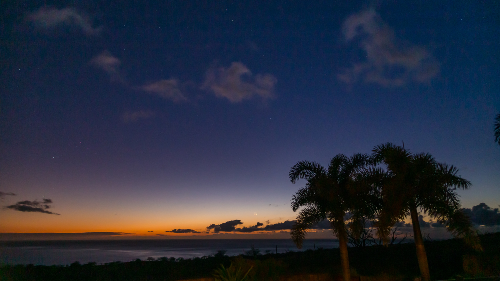
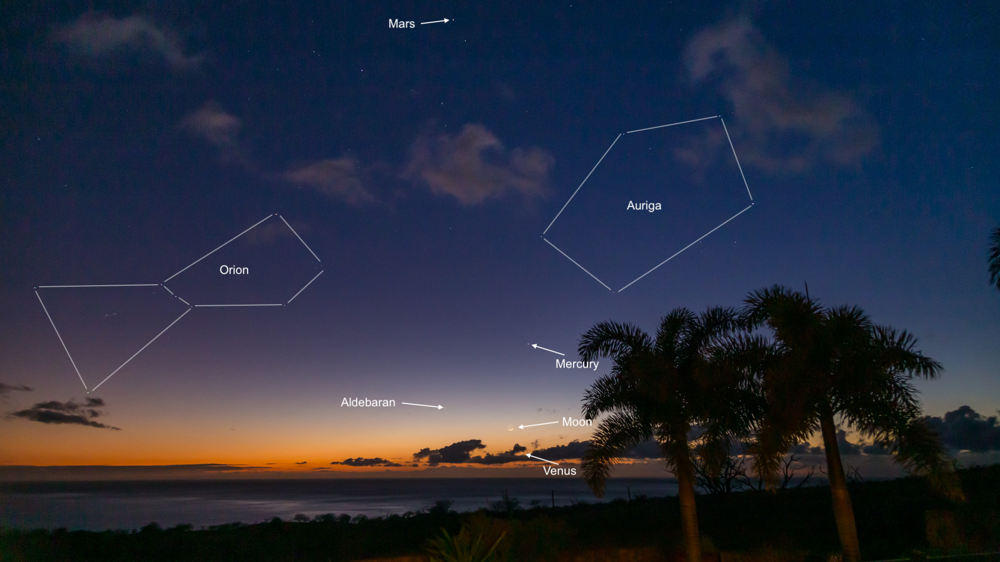

I recently had a very special opportunity to spend a week at a house owned by some friends of mine. They occasionally rent this house out as a vacation home, as it is located in a gorgeous area with sweeping views of the Kona and Kohala Coast. It has several luxury amenities such as a pool, a hot tub, and ... an observatory. :) It is called Hale Lalani Hoku, or Home of the Milky Way.
The house belongs to Marj and Roland Christen who own AstroPhysics, a company that makes high end telescopes and mounts. The roll off roof observatory contains a beautiful Starfire 175mm refractor on an AP1600GTO mount.
I did some eyepiece observing on several nights in sessions of varying lengths. In the first session, I was curious to see how this site near the coast compared to my more typical observing sites up at high elevation in the saddle between the mountains of Maunakea and Mauna Loa. In principle, the costal site should be somewhat less transparent thanks to additional atmosphere and humidity. I went through a list of galaxies in Corvus (which was high in the sky at the time) which I'd viewed in my 152mm Stellarvue Refractor and compared them to the views in the 175mm Starfire. The views in the Starfire were a bit brighter, just as one would expect from an increase in aperture. Clearly the site was up to the task of finding faint fuzzies.
I measured the sky brightness to be about 21.57 magnitudes per square arcsecond (mpas). This is just about 0.10 mpas brighter than what I measure with the same device up in the saddle area, so it was nearly indistinguishable to the naked eye. One thing that was significantly different was the temperature -- about 73 degrees F at 11:30 PM. That's probably 25-30 degrees warmer than my high elevation sites would be at the same time of year. That's a pretty amazing perk of low elevation sites here on the island if they are truly dark like this one is.
In the next session, I explored the Coma cluster of galaxies for the first time. I centered the telescope on NGC 4889, an 11th magnitude galaxy and one of the brightest in the cluster. With only small telescope moves, I was able to identify 14 galaxies in an area just over half a degree across. I also observed a number of brighter objects with no particular plan, choosing mostly based on a whim in the moment. The seeing was not great this night, so it was mostly galaxies and other DSOs.
In the third session, I spent some time in and around the large face on galaxy M101. I was able to clearly identify 3 cataloged nebulae/star clusters in the arms of the galaxy (NGC 5450, 5461, 5461) and other features in the arms were visible. I also tracked down four small galaxies in the vicinity (NGC 5485, 5473, 5474, and 5422).
In addition to the observatory, the naked eye stargazing was wonderful. The house looks over the Kohala coast and we had a number of gorgeous sunsets with a crescent moon setting shortly after the Sun.

The photo above shows the crescent Moon setting over the Pacific ocean while Venus is visible peeking out between the clouds below the Moon. Mercury (above and slightly to the right of the Moon) and Mars (near the top of the frame) are also visible. The constellations of Auriga (right) and Orion (left) are visible as well as Aldebaran, the brightest star in Taurus, setting to the left of the Moon.

The same image as above, but with labels for planets, constellations, and bright stars.